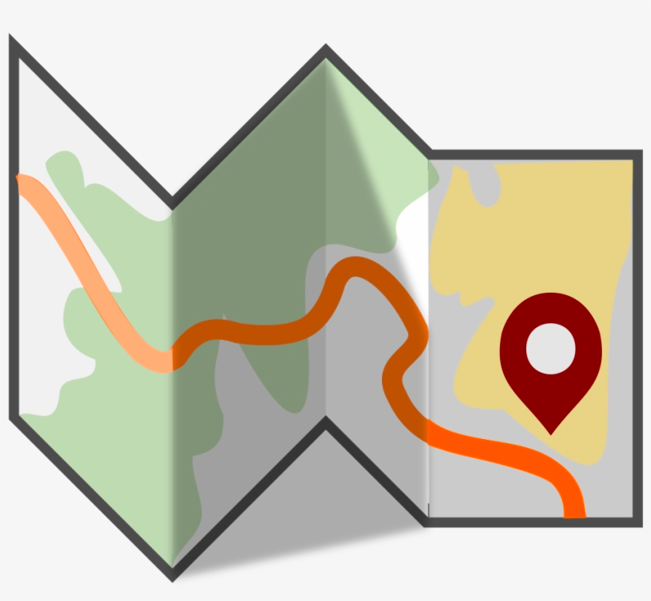

Simply put, programming is fun. I enjoy having a goal, and having to come up with a solution to reach that goal. The satisfaction that I feel when I successfully solve a problem when coding is one of the best feelings I’ve experienced, even more so when I solve the problem without any form of help. I first found my love of coding in my freshmen year of high school, when I took a game design class on impulse. I had a great time designing and creating a video game from scratch, and there was the addition of being able to have more fun after completing the project by playing the game I made myself. Even game development is appealing, as being able to create software which other people could use to create their own creative video games seems greatly rewarding.

The ideal future is to get a job in the game design industry, or even one in game development. I’d love to be able to complete a project, and not only look back at the experience of working on it, but also have the ability to continue to have fun with said project by playing it. Any job where I will be able to create something which will appeal to others and offer great entertainment to them is just so rewarding. The other great thing about designing video games is that you can always go back and tweak the game to make it more enjoyable or difficult. If I really wanted to talk about a dream goal, it would be to be able to code in almost any language. I’d love to be able to hop on any game engine and get to work creating my own game without having to go through an extensive process of looking up how to do what I want to do.
My more realistic goal is to learn how to use JavaScript and C++. As for my more short-term goals, I would love add more to my list of personal projects using javascript. While my ideal job is one in game design, in the case that I am unable to get a job in the game design field, I at the very least want to be able to continue to code as a job. The ability to have more choices and flexibility in my future career is the reason I chose to pursue a degree in Computer Science over a specified degree in game design.